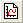
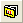

関連する動画はこちら：グラフテンプレート
関連する動画はこちら：グラフテンプレート
 関連する動画はこちら：グラフテンプレート
関連する動画はこちら：グラフテンプレート
全てのOriginグラフはグラフテンプレートから作図されます。最初にOriginで作図する時のグラフテンプレートはシステムテンプレートと使用可能な拡張テンプレート です。これらの組み込みテンプレートを編集し、カスタマイズされたテンプレートとして、User FIlesフォルダ または他の便利な場所に保存しようと考え出します。グラフテンプレートライブラリ から、編集したテンプレートおよび使用可能な拡張テンプレートにアクセス出来ます。
Origin 2022以降、Originは、アプリセンターと同様に、OriginLabのWebサイトのファイル交換の場からワークブックとグラフテンプレートをダウンロードできる新しいツール、テンプレートセンターを導入しました。 |
全てのグラフテンプレートは、簡単ないくつかのステップだけで基本的なグラフを作成するために、初期プロパティのセットを保持しています。操作は以下のいずれかの方法で行います。

をクリック、または ファイル：新規作成：グラフ から選択してテンプレートを選択して、空のグラフテンプレートファイルを開きます。データの入っていないテンプレートに、(a)ドラッグ＆ドロップ、(b)作図のセットアップダイアログ、または (c) レイヤ n ダイアログボックスでデータを追加します。（ヒストグラムやボックスプロット、ターナリのような、計算を必要とするグラフタイプについては、この方法では作成できません。代わりに、作図メニューまたはグラフツールバーボタンにより作成します。）
初期設定のテンプレートで作成したプロットが問題なければ、作図完成です。さらにグラフを編集したい場合には、編集した内容をテンプレートファイルに保存しておきます。次のセクションをご覧ください。
ほとんどの編集内容（アノテーションボタンオブジェクト以外）は、Originの作図の詳細 ダイアログボックス、軸ダイアログ、または関連するミニツールバーにて行えます。
作図の詳細ダイアログボックスでは、ページ > レイヤ > プロット といった階層構造になっています。 グラフウィンドウプロパティの内容及び操作については、これらのトピックをご覧ください。
全グラフの軸設定は、軸ダイアログボックスで行うことができます。三点(ターナリ)および極座標グラフなど、一部の特定のグラフには、独自の軸ダイアログがあります。
また、ミニツールバーは、ほとんどの2Dグラフ及び等高線図の、一般的なグラフプロパティを対話的に変更するための「クイック編集」ツールです。これらのツールバーは、選択したオブジェクトのタイプに依存します。ポップアップのボタンを使用すると、一般的なカスタマイズオプションすべてにアクセスできるため、複雑なダイアログを開かなくてもすばやく変更を実行できます。
どの編集項目がテンプレートに保存されるかについては、Originヘルプファイルのグラフテンプレートに保存される属性をご覧下さい。
基本のグラフを作成して、さらに編集した内容を再利用するために保存するには、次のステップで編集したグラフテンプレートを保存します。
グラフウィンドウをアクティブにして
ダイアログボックスでの編集方法についての詳細は、テンプレートしてカスタムウィンドウを保存をご覧ください。
クローンテンプレートは、一般的な構造で常に表示されていたデータの「スマートプロット」というものでした。クローンテンプレートはテンプレート選択の前に、データの事前選択を必要としません。(実際に、クローンテンプレートにプロットする際に行われるデータ選択は無視されます）アクティブブックまたは行列ブックのデータ構造が、複製可能なテンプレートに保存されているデータ構造と一致する場合、複製可能なテンプレートの左下隅にある羊のアイコンが青色になります。テンプレートライブラリでそのテンプレートを選択し、作図ボタンをクリックします。テンプレートライブラリをバイパスするだけで、作図：ユーザテンプレートに作図リストから羊アイコンでマークされたテンプレートを選択することもできます。
グラフウィンドウをアクティブにして
もう1つのスマートな作図ツールはバッチ作図です。これは、テンプレートファイルを保存したり呼び出したりする必要がありません。 |

をクリック、または、メニューの作図：テンプレートライブラリを選択します。